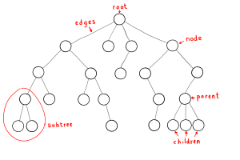

A tree is a non-linear data structure that simulates a hierarchical tree structure.

A general tree, or k-ary tree, is made up of nodes (or vertices) connected by edges.
A tree has a root node and potentially many levels of an arbitrary number of children that form a hierarchy.
If a node is connected to other nodes below it, that node is called the parent node, and the nodes following it are called child nodes. Each node in the tree can be see as a subtree.
Note: A tree is a graph without cycles.
Inserts a node in the tree.
This searches for a node with the given value in the
tree and returns
true if it exists, otherwise
false.
Returns the minimum or maximum value in the tree.
Removes a node from the tree.
The top node in a tree.
A node directly connected to another node when moving
away from the root.
A node with other nodes connected below it.
A group of nodes with the same parent.
A node with no children.
A node with at last one child.
For a given node, its number of children. A leaf is
necessarily degree zero.
The connection between one node and another.
A sequence of nodes and edges connecting a node with a
descendant.
The level of a node is defined as: 1 + the number of
edges between the node and the root.
The depth of a node is defined as: the number of edges
between the node and the root.
The height of a node is the number of edges on the
longest path between that node and a leaf.
The height of a tree is the height of its root node.
A forest is a set of
n ≥ 0 disjoint
trees.